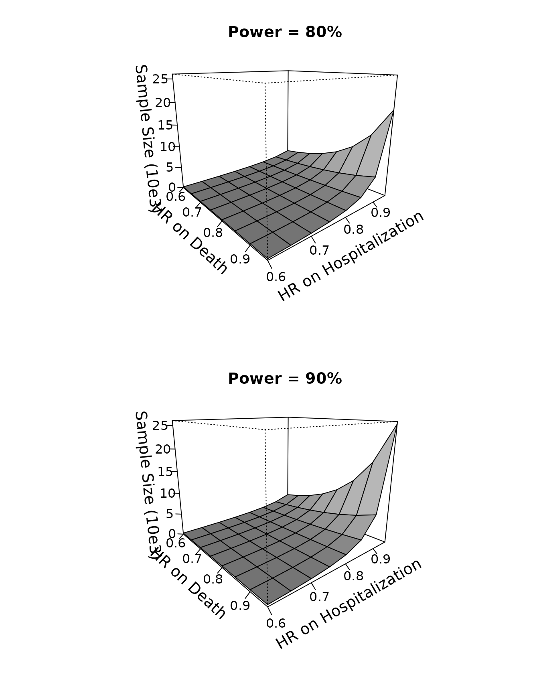

Sample size calculation for standard win ratio test
Lu Mao (lmao@biostat.wisc.edu)
WR_sample_size.RmdINTRODUCTION
This vignette demonstrates the use of the WR package in
sample size calculation for standard win ratio test of death and
nonfatal event using component-wise hazard ratios as effect size (Mao et
al., 2021, Biometrics).
Data and the test
Let denote the survival time and the first nonfatal event time of a patient in group , where indicates the active treatment and indicates the control. Likewise, use to denote the independent censoring time. In the standard win ratio of Pocock et al. (2012), the “win” indicator at time can be written as where . So the winner goes to the longer overall survivor or, if both survive past , the longer event-free survivor. Tweaks to this rule to incorporate recurrent event are considered in Mao et al. (2022).
Using this notation, Pocock’s win ratio statistic becomes where the are a random -sample of (the right hand side of (1) is indeed computable with censored data). A two-sided level- win test of group difference rejects the null if , where , is a consistent variance estimator, and is the th quantile of the standard normal distribution. Mao (2019) showed that this test is powerful in large samples if the treatment stochastically delays death and the nonfatal event jointly.
Methods for sample size calculation
To simplify sample size calculation, we posit a Gumbel–Hougaard copula model with marginal proportional hazards structure for and : where and are the baseline hazards for death and the nonfatal event, respectively, and controls their correlation (with Kendall’s concordance ). The parameters $\boldsymbol\xi:=(\xi_1,\xi_2)^{\rm T}$ are the component-wise log-hazard ratios comparing the treatment to control, and will be used an the effect size in sample size calculation. Further assume that patients are recruited to the trial uniformly in an initial period and followed up until time , during which they randomly drop out with an exponential hazard rate of . This leads to . The outcome parameters , and may be estimated from pilot study data if available (see Section 3.2 of Mao et al. (2021)), whereas the design parameters and perhaps are best elicited from investigators of the new trial.
The basic sample size formula is $$\begin{equation}\tag{3} n=\frac{\zeta_0^2(z_{1-\beta}+z_{1-\alpha/2})^2}{q(1-q)(\boldsymbol\delta_0^{\rm T}\boldsymbol\xi)^2}, \end{equation}$$ where , is the target power, is a noise parameter similar to the standard deviation in the -test, and is a bivariate vector containing the derivatives of the true win ratio with respect to and . Under model (2) for the outcomes and the specified follow-up design, we can calculate and as functions of , and by numerical means. Note in particular that they do not depend on the effect size .
BASIC SYNTAX
The function that implements formula (3) is WRSS(). We
need to supply at least two arguments: xi for the bivariate
effect size
(log-hazard ratios) and a list bparam containing
zeta2 for
and delta for
.
That is,
obj<-WRSS(xi,bparam)The calculated
can be extracted from obj$n. The default configurations for
,
and
are 0.5, 0.05, and 0.8 but can nonetheless be overridden through
optional arguments q, alpha, and
power, respectively. You can also change the default
two-sided test to one-sided by specifying side=1.
The function WRSS() itself is almost unremarkable given
the simplicity of the underlying formula. What takes effort is the
computation of
and
needed for bparam. If you have the parameters
,
and
ready, you can do so by using the base() function:
bparam<-base(lambda_D,lambda_H,kappa,tau_b,tau,lambda_L)where the arguments follow the order of the said parameters. The
returned object bparam can be directly used as argument for
WRSS() (it is precisely a list containing
zeta2 and delta for the computed
and
,
respectively). Due to the numerical complexity, base() will
typically require some wait time.
Finally, if you have a pilot dataset to estimate
,
,
and
for the baseline outcome distribution, you can use the
gumbel.est() function:
gum<-gumbel.est(id, time, status)where id is a vector containing the unique patient
identifiers, time a vector of event times, and
status a vector of event type labels: status=2
for nonfatal event, =1 for death, and =0 for
censoring. The returned object is a list containing real numbers
lambda_D, lambda_H, and kappa for
,
,
and
respectively. These can then be fed into base() to get
bparam.
A REAL EXAMPLE
We demonstrate the use of the above functions in calculating sample size for win ratio analysis of death and hospitalization using baseline parameters estimated from a previous cardiovascular trial.
Pilot data description
The Heart Failure: A Controlled Trial Investigating Outcomes of Exercise Training (HF-ACTION) trial was conducted on a cohort of over two thousand heart failure patients recruited between 2003–2007 across the USA, Canada, and France (O’Connor et al., 2009). The study aimed to assess the effect of adding aerobic exercise training to usual care on the patient’s composite endpoint of all-cause death and all-cause hospitalization. We consider a high-risk subgroup consisting of 451 study patients. For detailed information about this subgroup, refer to the vignette Two-sample win ratio tests of recurrent event and death.
We first load the package and clean up the baseline dataset for use.
## load the package
library(WR)
#> Error in get(paste0(generic, ".", class), envir = get_method_env()) :
#> object 'type_sum.accel' not found
## load the dataset
data(hfaction_cpx9)
dat<-hfaction_cpx9
head(dat)
#> patid time status trt_ab age60
#> 1 HFACT00001 7.2459016 2 0 1
#> 2 HFACT00001 12.5573770 0 0 1
#> 3 HFACT00002 0.7540984 2 0 1
#> 4 HFACT00002 4.2950820 2 0 1
#> 5 HFACT00002 4.7540984 2 0 1
#> 6 HFACT00002 45.9016393 0 0 1
## subset to the control group (usual care)
pilot<-dat[dat$trt_ab==0,]Use pilot data to estimate baseline parameters
Now, we can use the gumbel.est() functions to estimate
,
,
and
.
id<-pilot$patid
## convert time from month to year
time<-pilot$time/12
status<-pilot$status
## compute the baseline parameters for the Gumbel--Hougaard
## copula for death and hospitalization
gum<-gumbel.est(id, time, status)
gum
#> $lambda_D
#> [1] 0.1088785
#>
#> $lambda_H
#> [1] 0.679698
#>
#> $kappa
#> [1] 1.925483
lambda_D<-gum$lambda_D
lambda_H<-gum$lambda_H
kappa<-gum$kappaThis gives us
,
,
and
.
Suppose that we are to launch a new trial that lasts
years, with an initial accrual period of
years. Further suppose that the loss to follow-up rate is
(about half of the baseline death rate). Combining this set-up with the
estimated outcome parameters, we can calculate
and
using the base() function.
## max follow-up 4 years
tau<-4
## 3 years of initial accrual
tau_b<-3
## loss to follow-up hazard rate
lambda_L=0.05
## compute the baseline parameters
bparam<-base(lambda_D,lambda_H,kappa,tau_b,tau,lambda_L)
bparam
#> $zeta2
#> [1] 0.2942899
#>
#> $w0
#> [1] 0.4251441
#>
#> $delta
#> delta1 delta2
#> 0.08886542 0.34018646Using WRSS() to compute sample size
Now we can use the computed bparam to calculate sample
size under different combinations of component-wise hazard ratios. We
consider target power
and
.
## effect size specification
thetaD<-seq(0.6,0.95,by=0.05) ## hazard ratio for death
thetaH<-seq(0.6,0.95,by=0.05) ## hazard ratio for hospitalization
## create a matrix "SS08" for sample size powered at 80%
## under each combination of thetaD and thetaH
mD<-length(thetaD)
mH<-length(thetaH)
SS08<-matrix(NA,mD,mH)
rownames(SS08)<-thetaD
colnames(SS08)<-thetaH
## fill in the computed sample size values
for (i in 1:mD){
for (j in 1:mH){
## sample size under hazard ratios thetaD[i] for death and thetaH[j] for hospitalization
SS08[i,j]<-WRSS(xi=log(c(thetaD[i],thetaH[j])),bparam=bparam,q=0.5,alpha=0.05,
power=0.8)$n
}
}
## print the calculated sample sizes
print(SS08)
#> 0.6 0.65 0.7 0.75 0.8 0.85 0.9 0.95
#> 0.6 192.3437 250.7878 332.3623 450.1854 627.8914 911.4731 1400.025 2339.457
#> 0.65 205.4637 270.4621 362.6444 498.4542 708.5504 1055.3200 1681.613 2974.743
#> 0.7 218.8455 290.8172 394.5283 550.4150 797.9324 1221.1700 2025.550 3825.411
#> 0.75 232.5145 311.9056 428.1477 606.4539 897.2664 1413.3977 2450.215 4993.647
#> 0.8 246.4942 333.7800 463.6438 666.9984 1007.9865 1637.4667 2981.054 6648.349
#> 0.85 260.8071 356.4934 501.1668 732.5254 1131.7759 1900.2707 3654.047 9084.279
#> 0.9 275.4748 380.1004 540.8778 803.5685 1270.6228 2210.6027 4521.345 12852.227
#> 0.95 290.5186 404.6569 582.9505 880.7278 1426.8882 2579.8125 5660.714 19076.653
## repeating the same calculation for power = 90%
SS09<-matrix(NA,mD,mH)
rownames(SS09)<-thetaD
colnames(SS09)<-thetaH
## fill in the computed sample size values
for (i in 1:mD){
for (j in 1:mH){
## sample size under hazard ratios thetaD[i] for death and thetaH[j] for hospitalization
SS09[i,j]<-WRSS(xi=log(c(thetaD[i],thetaH[j])),bparam=bparam,q=0.5,alpha=0.05,
power=0.9)$n
}
}
## print the calculated sample sizes
print(SS09)
#> 0.6 0.65 0.7 0.75 0.8 0.85 0.9 0.95
#> 0.6 257.4937 335.7337 444.9388 602.6705 840.5684 1220.204 1874.236 3131.869
#> 0.65 275.0576 362.0720 485.4779 667.2887 948.5479 1412.774 2251.203 3982.337
#> 0.7 292.9720 389.3217 528.1615 736.8496 1068.2051 1634.800 2711.636 5121.140
#> 0.75 311.2709 417.5531 573.1683 811.8697 1201.1852 1892.139 3280.143 6685.076
#> 0.8 329.9858 446.8367 620.6875 892.9217 1349.4079 2192.103 3990.786 8900.253
#> 0.85 349.1467 477.2435 670.9201 980.6437 1515.1269 2543.923 4891.732 12161.272
#> 0.9 368.7827 508.8465 724.0820 1075.7503 1701.0034 2959.370 6052.798 17205.486
#> 0.95 388.9220 541.7208 780.4053 1179.0446 1910.1985 3453.637 7578.090 25538.227Powered at , the sample size ranges from 193 at $\exp(\boldsymbol\xi)=(0.6, 0.6)^{\rm T}$ to 19,077 at $\exp(\boldsymbol\xi)=(0.95, 0.95)^{\rm T}$; powered at , the sample size ranges from 258 at $\exp(\boldsymbol\xi)=(0.6, 0.6)^{\rm T}$ to 25,539 at $\exp(\boldsymbol\xi)=(0.95, 0.95)^{\rm T}$. We can even use a 3D plot to display the calculated sample size as a function of the hazard ratios and .
oldpar <- par(mfrow = par("mfrow"))
par(mfrow=c(2,1))
persp(thetaD, thetaH, SS08/1000, theta = 50, phi = 15, expand = 0.8, col = "gray",
ltheta = 180, lphi=180, shade = 0.75,
ticktype = "detailed",
xlab = "\n HR on Death", ylab = "\n HR on Hospitalization",
zlab=paste0("\n Sample Size (10e3)"),
main="Power = 80%",
zlim=c(0,26),cex.axis=1,cex.lab=1.2,cex.main=1.2
)
persp(thetaD, thetaH, SS09/1000, theta = 50, phi = 15, expand = 0.8, col = "gray",
ltheta = 180, lphi=180, shade = 0.75,
ticktype = "detailed",
xlab = "\nHR on Death", ylab = "\nHR on Hospitalization",
zlab=paste0("\n Sample Size (10e3)"),
main="Power = 90%",
zlim=c(0,26),cex.axis=1,cex.lab=1.2,cex.main=1.2
)
par(oldpar)References
Mao, L. (2019). On the alternative hypotheses for the win ratio. Biometrics, 75, 347-351. https://doi.org/10.1111/biom.12954.
Mao, L., Kim, K., & Li, Y. (2022). On recurrent-event win ratio. Statistical Methods in Medical Research, under review.
Mao, L., Kim, K., & Miao, X. (2021). Sample size formula for general win ratio analysis. Biometrics, https://doi.org/10.1111/biom.13501.
O’Connor, C. M., Whellan, D. J., Lee, K. L., Keteyian, S. J., Cooper, L. S., Ellis, S. J., Leifer, E. S., Kraus, W. E., Kitzman, D. W., Blumenthal, J. A. et al. (2009). “Efficacy and safety of exercise training in patients with chronic heart failure: HF-ACTION randomized controlled trial”. Journal of the American Medical Association, 301, 1439–1450.
Pocock, S., Ariti, C., Collier, T., and Wang, D. (2012). The win ratio: a new approach to the analysis of composite endpoints in clinical trials based on clinical priorities. European Heart Journal, 33, 176–182.